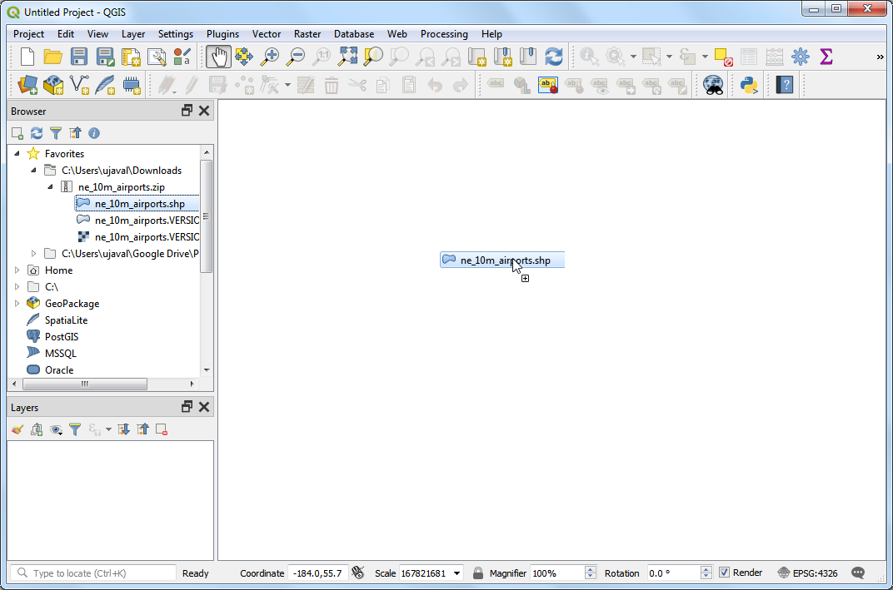
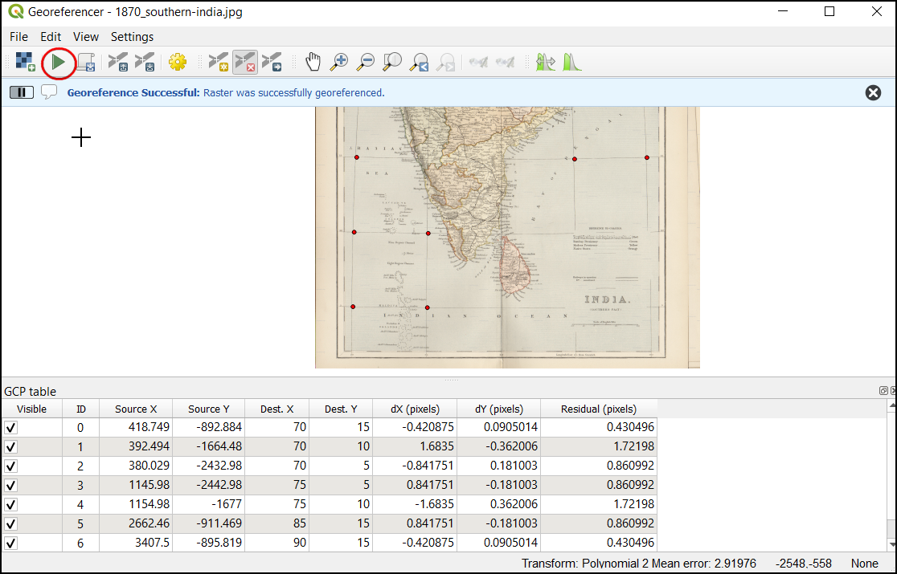
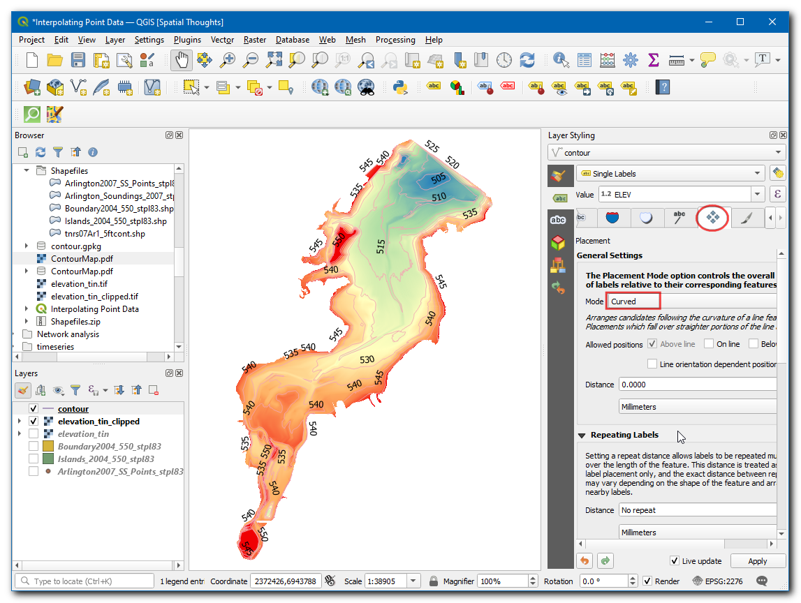
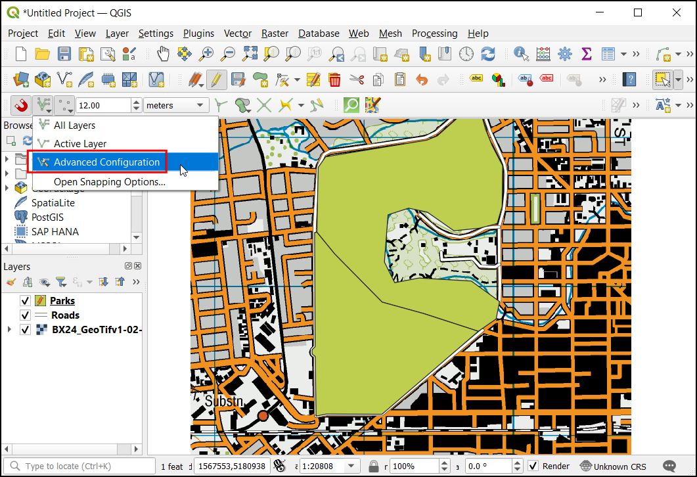
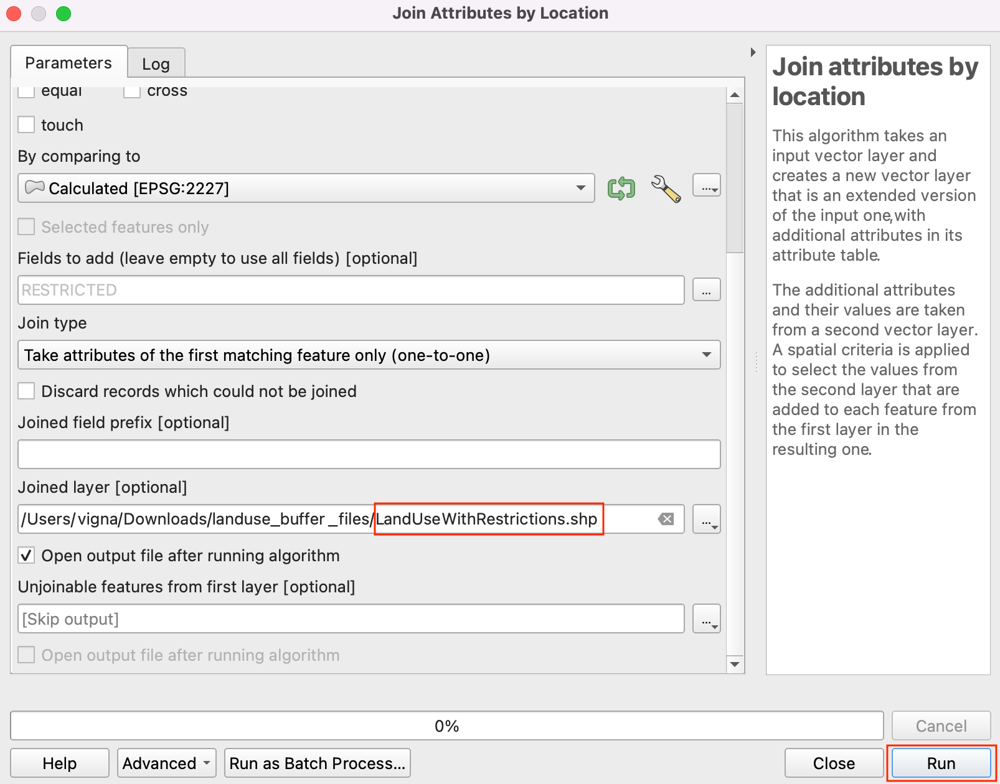

Determining Landuse Buffer Zones (QGIS3)¶
In this tutorial you will work with landuse data for a city and determine buffer zones around a particular land parcel. Such analysis is required to establish a corridor of restrictions around noise pollution or heavy traffic.
Overview of the task¶
We will start with a shapefile of land parcels for the City of San Francisco and use geoprocessing and spatial analysis techniques to determine a buffer of restricted area around all properties with institutional land use.
Other skills you will learn¶
Creating rectangular buffers in QGIS
Using a Spatial Index to speed up analysis
Get the data¶
The data comes from City of San Francisco in form of parcels polygons with attribute indicating the Land use categories. You can find the data for the tutorial from DataSF Open Data Portal.
Let’s see the steps to download a polygon shapefile with land use categories for every parcel in San Francisco.
Go to the data portal - https://datasf.org/opendata/. Search for the keyword
Land usein the search bar.
Click on the first search result to visualise and export the data.

You will see the data and attributes. Click Export to download the
Land Use 2020data.
In the export options, click on Shapefile to download the polygon shapefile of the data.

A zip-file of the landuse will be downloaded. Switch to the About tab to read information about landuse categories and units which will be useful further in this tutorial.

For convenience, you may directly download a copy of the shapefile below:
Procedure¶
Open QGIS. Click icon to add the layer.
Switch to Vector tab and navigate to the landuse shapefile. Click Add.

Notice the CRS name at the bottom-right corner of QGIS. It indicates that the data is in geographic coordinate system
OGC:CRS84. Click on it.
The Project Coordinate Reference System (CRS) dialog will show the selected CRS is
WGS 84 (CRS 84). Unit of measurement for this CRS isDegree. All geoprocessing on this layer will be done in the native units of the CRS. The unit degree is inappropriate for this analysis.
We will reproject the layer to the projected CRS suitable for the region -
NAD83 / California zone 3 (ftUS). This isEPSG:2227which uses NAD83 datum with measurement units in feet.Go to .
In the Reproject Layer dialog, select the loaded layer as Input Layer. Click on the icon beside the selector to choose the Target CRS.

Search for
EPSG:2227in the bar and select theNAD83 / California zone 3 (ftUS)CRS. Click Go back to continue.
Save the Reprojected output. Expand the browsing options and select Save to File.

Save the output shapefile in your chosen folder as
LandUse2020.shp. Check the Open output file after running algorithm option to add the reprojected layer to QGIS.
Remove the original layer with CRS WGS 84 from the QGIS. Select the layer and click on Remove Layer symbol.

We will continue the process with the reprojected layer. As we saw in the About section of the downloaded shapefile in the data portal, the classification is as follows.
CIE = Cultural, Institutional, Educational
MED = Medical
MIPS = Office (Management, Information, Professional Services)
MIXED = Mixed Uses (Without Residential)
MIXRES = Mixed Uses (With Residential)
PDR = Industrial (Production, Distribution, Repair)
RETAIL/ENT = Retail, Entertainment
RESIDENT = Residential
VISITOR = Hotels, Visitor Services
VACANT = Vacant
ROW = Right-of-Way
OPENSPACE = Open Space
For this tutorial, we are interested only in the Institutional land use. So we can query for the value CIE in the attribute table. Go to .

Search the Select by Attribute tool from the processing toolbox. Double-click to open it.

In the Select by Attribute dialog, set
LandUse2020as the Input layer. Selectlanduseas the Selection attribute and enterCIEas the Value. Click Run.

You will see the parcels matching our query will be highlighted in yellow. These are all parcels belonging to the institutional land use in the city.

Now we can create a buffer around the selected parcels. Back in the main QGIS window, open Processing Toolbox. Search and locate the Buffer tool. Double-click to open it.

In the Buffer dialog, select LandUse2020 as the Input layer. Check the Selected features only box so the buffer will apply only to the selected institutional land use parcels. We will create a buffer zone of 100ft around each parcel. Enter 100 feet as the Distance. The default buffers are of circular shape. Since we are dealing with parcel data, a rectangular buffer area is more appropriate where each edge of the parcel will be offset by the buffer distance. Select
Squareas the End cap style andMiteras the Join style. Click the browse button next to Buffered and select Save to File.

Enter the output file name as
buffer.shpand click OK. Click Run.

Once the processing finishes, a new layer buffer will be added to QGIS. These polygons represent the buffer zone of restrictions around the institutional land use.

We now know which areas of the city fall under the restricted zone. It would be useful to identify all parcels which fall in this zone and add an attribute indicating that a restriction applies to that parcel. Let’s first add a column to the buffer polygons. Search for in the processing toolbox. Double-click to open.

In the Field Calculator dialog, ensure buffer is selected as the Input layer. We don’t need to save this layer, so leave the Output file field empty. Enter
RESTRICTEDas the result Field Name. Set the Result field type toString. TypeYesas the Expression. Click Run.

A new layer called Calculated will be added to QGIS. Open the Attribute Table and verify that a new column called RESTRICTED with value Yes exists in this layer.

22. Next step is to do a Spatial Join to add this attribute to the original parcels layer based on which parcels intersect with the buffer zone. The LandUse2020 layer has more than 100,000 elements. We will add spatial indexing to the features to improve the performance and speedup the spatial join operation.
Check out the course Spatial Indexing section to understand more about this.
Now, search and locate the tool from the Processing Toolbox and double-click to open.

Select
LandUse2020as Input layer and click Run.The spatial index is created for the layer. You can verify this by checking the property of the layer. Right-click on the layer and click Properties.

Switch to the Source tab and and look under the Geometry section. It indicates that the spatial index exists.

Now we can do the spatial join. Look for tool in the processing toolbox. Double-click to open it.

We want to Join to features in the
LandUse2020layer By comparing to theCalculatedlayer. We want to join attributes features that intersect. Check the box forintersect. Click the browse button next to Fields to add.

Select only the
RESTRICTEDfield and click OK.

For Join Type, select
Take attribute of the first matching feature only. Next, click … next to Joined layer and select Save to File.

Enter the Joined layer name as
LandUseWithRestrictions.shpand click OK. Click Run.

Once the processing finishes, you will get a new layer
LandUseWithRestrictions. Open the attribute table and examine theRESTRICTEDcolumn. The parcels that fall within 100ft of an institutional parcel now have the valueYesindicating a restriction applies to that parcel. Other parcels have aNULLvalue indicating no restriction.
If you want to give feedback or share your experience with this tutorial, please comment below. (requires GitHub account)